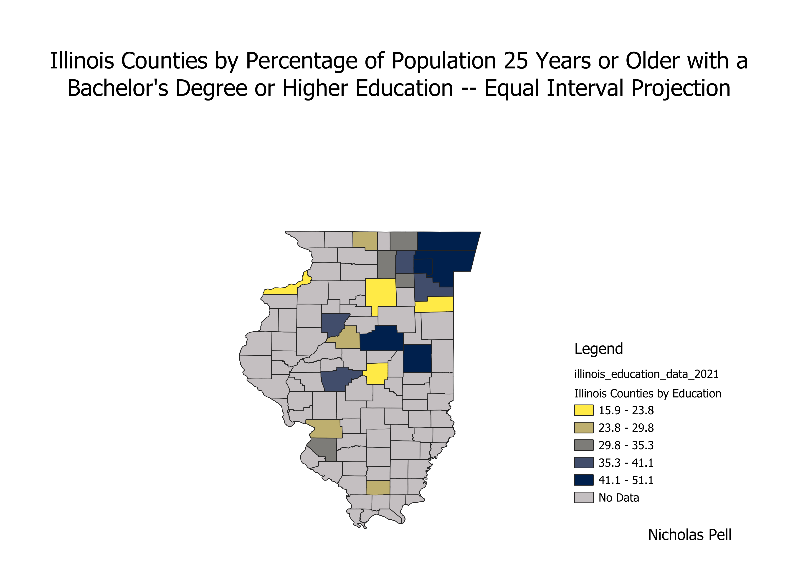

Homework 6 pt 2: Census data ratios and categories
Nicholas Pell
These are 3 different modes of QGIS projection for a ratio of Illinois county data. The ratio shows the percentage of people 25 years old and older within each county that have acheived a Bachelor's degree or higher education. The ratio put the population of people 25 years old and older that had attained a Bachelor's degree or higher education in each county over the population of people in each county that are 25 years old or older.
This first map displays the data using an equal interval mode of projection. This categorizes the counties into 5 groups each of which being of an equal size. This is good if the data is evenly separated. The equal interval projection falls short when all of the data falls into similar intervals and then determining the difference between them becomes tedious or impossible.

This map is an equal count mode of projection. This separates the data into quantiles having an equal amount of counties in each interval. This is once again good for even data and shows where similarities and separations occur. This projection does a poor job of displaying outliers in the data as they must be fit into a quantile and then someone studying the projection has no way of knowing the data point is an outlier.

The natural breaks mode of projection is shown in this map. This separates the data into specified intervals, in this case 5, based on the best separation points as decided by an algorithm. This method is good for showing outliers and big jumps in data. This method does a poor job with data that does not have large variance as the groups will not always be even.
Data used for this project
CSV dataset
Link to shapefile